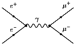

Гипотеза цвета явилась началом создания современной теории сильных взаимодействий- квантовой хромодинамики. Мы познакомимся вначале с опытными фактами, которые натолкнули физиков на идею существования глюонов - квантов цветного поля.
1) Проблема статистики для uuu, ddd, sss состояний c JP = 3/2+
Как известно, фермионы подчиняются статистике Ферми-Дирака, вследствие чего полная волновая функция, описывающая систему с полуцелым спином, должна быть антисимметрична. Но кварки, образующие в кварковой модели резонансы Δ++ = (uuu), Δ- = (ddd), и частицу Ω- = (sss), должны находиться в симметричном S-состоянии, что запрещено принципом Паули. Можно отказаться от статистики Ферми для кварков, ввести "парастатистику", и т.д. Но можно попытаться остаться при прежних фундаментальных воззрениях и принципах и формально спасти положение, придумав новое по отношению к пространству-времени и изотопическому ( или унитарному ) пространству так называемое цветное пространство. Поскольку qqq надо антисимметризовать, а простейший тензор под руками - абсолютно антисимметричный тензор 3-го ранга εabc, который, как мы уже знаем, преобразуется по единичному представлению группы SU(3), то свертка εabcqaqbqc будет скаляром SU(3) по вновь введенному квантовому числу "цвет" (здесь a, b, c = 1,2,3 - цветные индексы, не имеющие никакого отношения к унитарным индексам в предыдущих формулах для барионов). Таким образом, и статистика спасена, и не появилось никому (почти никому) не нужного нового отличного от нуля квантового числа "цвет" (типа новой странности и нового изоспина) для обычных барионов, которого вовсе не требуют экспериментальные данные. Зато кварки стали цветные, их число утроилось. Ну и бог с ними, все равно они не наблюдаемы.
2) Проблема с временем жизни π0-мезона
Мы уже отмечали, что простая модель распада π0-мезона, основанная на фейнмановской диаграмме с нуклонной петлей, дает, как ни странно, хорошее согласие с экспериментом. При этом в вероятность распада масса нуклонов петли входит в знаменатель в квадрате. По этой причине переход к модели конституентных кварков (переход от mN = 0.940 ГэВ к mu = 0.300 ГэВ) уменьшает ее примерно в 10 раз. Другими словами, результат кварковой модели резко расходится с опытными данными. Как спасти ситуацию? Утроить число кварковых диаграмм посредством введения цвета!! Действительно, поскольку 32 = 9, то ситуация спасена.
3) Проблема с сечением рождения адронов в e+e--аннигиляции
Рассмотрим отношение сечения рождения адронов в e+e- аннигиляции к хорошо известному сечению рождения мюонов в e+e--аннигиляции:
(6.1) |
Как можно видеть из диаграмм Фейнмана в низшем
порядке теории возмущений по константе  ,
,
|  |
соответствующие процессы в пренебрежении
процессом "адронизации" кварков
описываются одинаковыми диаграммами. Различие
заключается в разных зарядах электронов
(позитронов) и кварков. В простой кварковой
модели с точечными кварками отношение R дается
просто суммой квадратов зарядов кварков, т.е., для
интервала энергий электрон-позитронных колец
вплоть до 2-3 ГэВ R = (2/3)2 + (-1/3)2 + (-1/3)2 = 2/3.
Однако, эксперимент дает в этом интервале
энергий цифру примерно возле 2.0. Как понятно,
многое можно списать на плохо понятный процесс
"адронизации" кварков (все-таки измеряются
в конце адроны, а не кварки!). Но опять-таки
простейшим решением является утроение числа
кварков, тогда как раз и получится нужная цифра: 3 x 2/3 = 2.
Итак, введение трех цветов может
одновременно снять несколько важных и даже
принципиальных противоречий в физике частиц.
Но динамическая теория возникает
только тогда, когда появляется квант поля (глюон),
передающий цвет от одного кварка к другому, и
этот квант так или иначе воздействует на
измерительные приборы.( Иначе все останется на
уровне более или менее удачной классификации,
как, например, случилось с изотопическим спином и
гиперзарядом. На сегодняшний день им нельзя
сопоставить квантов поля.)
Полагают, что динамические теории
тесным образом связаны с локальной градиентной
инвариантностью лагранжиана, описывающего поля
и их взаимодействия, относительно вполне
определенных групп преобразований.